Week 08:
Probably too much Probability Theory
class: inverse, center, middle # Overview
General Plan
- Setup
- Lab Preview
- Lecture
- Probability Theory
- Conditional Probability
- Random variables and probability distributions
- Expected values and variances
Lab: Predicting Election Outcomes
Available here
Get set up to work (5 minutes)
Calculate Obama’s expected electoral vote share on November 3, 2008 (the day before the election) (10 minutes)
Simulate a 1000 elections for November 3, 2008 using the betting market prices a measure of the probability that Obama wins or loses a state (10 minutes)
Display the results of your simulation with a histogram. (5 minutes)
Transform these probabilities to reduce the likelihood that Obama wins states like Alabama and increase the likelihood that Obama wins states like California (5 minutes)
Simulate another 1000 elections using these transformed probabilities. Compare the results to your initial simulation. (10 minutes)
Calculate Obama’s expected total number of votes for each day in the 120 days before the 2008 election (15 minutes)
Simulate 100 elections for each of the 120 days before the election, plot the results of your simulation. (20 minutes)
💪
Get set up to work
New packages
And tools for doing Permutations and Combinations
Packages for today
the_packages <- c(
## R Markdown
"kableExtra","DT","texreg", "htmltools",
## Tidyverse
"tidyverse", "lubridate", "forcats", "haven", "labelled",
## Extensions for ggplot
"ggmap","ggrepel", "ggridges", "ggthemes", "ggpubr",
"GGally", "scales", "dagitty", "ggdag", "ggforce",
# Graphics:
"scatterplot3d", #<<
# Data
"COVID19","maps","mapdata","qss","tidycensus", "dataverse",
# Analysis
"DeclareDesign", "zoo",
"gtools" #<<
)Define a function to load (and if needed install) packages
Load packages for today
kableExtra DT texreg htmltools tidyverse
TRUE TRUE TRUE TRUE TRUE
lubridate forcats haven labelled ggmap
TRUE TRUE TRUE TRUE TRUE
ggrepel ggridges ggthemes ggpubr GGally
TRUE TRUE TRUE TRUE TRUE
scales dagitty ggdag ggforce scatterplot3d
TRUE TRUE TRUE TRUE TRUE
COVID19 maps mapdata qss tidycensus
TRUE TRUE TRUE TRUE TRUE
dataverse DeclareDesign zoo gtools
TRUE TRUE TRUE TRUE 💪
Load Data for today
What we’ll cover today
Probability
Probability is a measure of uncertainty telling us how likely an event (or events) is (are) to occur
Probability follows three simple rules (from which numerous theorems follow)
Conditional Probability
Conditional probability allow us to describe how our beliefs about one event change after observing another event(s)
We can update beliefs using Bayes Rule
Random Variables and Probability Distributions
Random variables map events in the world onto numbers
Probability distributions describe the likelihood that random variables take certain values
The expected value of a random variable is a probability weighted average that tells us the most likely value a variable will take
💡
Probability
Probability
Probability describes the likelihood of an event happening.
Statistics uses probability to quantify uncertainty about estimates and hypotheses.
To do this, we will need to understand:
Definitions (experiment, sample space, events,)
Three rules of probability (Kolmogorov axioms)
Two interpretations interpreting probabilities (Frequentist and Bayesian)
- Some rules for counting
Experiments, sample spaces, sets, and events
In probability theory, an experiment describes a repeatable process where the outcome is uncertain
- Processes where the outcomes are uncertain are called non-deterministic or stochastic
The sample space of an experiment is the set \((\Omega\) “omega”, or \(S\)) of all the possible outcomes of an experiment
Sets can be:
- empty \(( A: \{\emptyset\}\)
- a single event \(( Coin: \{\text{Heads}\}\)
- multiple events \(( Odd\, \#s: \{\text{1,3,5}\}\)
- infinite \((\mathbb{R}: \text{ The set of real numbers}\{ -\infty \dots +\infty\}\))
An event, \((E\) or \(A)\) is a subset of outcomes in the sample space
- The sample space for a coin flip is \(\Omega = \{\text{Heads, Tails}\}\)
- The event Heads is a subset of \(\Omega\)
background-image:url(“https://www.playmonster.com/wp-content/uploads/2019/09/1000_set_pkgcontents-1.png”) background-size:contain
Operations on Sets
- Empty Set: \(\emptyset\) a set with no elements
- Subset:
- Let \(D\) be the set outcomes for a 6-side die: \(D=\{1,2,3,4,5,6\}\)
- \(Primes=\{2,3,5\}\)
- \(Primes \subset D \iff \forall X \in Primes, X \in D\)
- Unions
- \(A \cup B = \{X:X \in A \lor X \in B \}\)
- Either \(A\), \(B\) or both \(A and B\) occur
- Intersections
- \(A \cap B = \{X:X \in A \land X \in B \}\)
- Both \(A\) and \(B\) occur
- Complements
- \(A'=A^\complement = \{X:X\notin A\}\)
- \(A'=A^\complement\) means \(A\) does not occur
- \(\emptyset^\complement=S\) and \(S^\complement=\emptyset\)
background-image:url(“https://www.onlinemathlearning.com/image-files/set-operations-venn-diagrams.png”) background-size:contain
Three Rules of Probability
- Probability is defined by three rules or assumptions called the Kolmogorov Axioms
- The probability of any event \(A\) is nonnegative
\[Pr(A) \geq 0 \]
- The probability that one of the outcomes in the same space occurs is 1
\[Pr(\Omega) = 1 \]
- If events \(A\) and \(B\) are mutually exclusive, then:
\[Pr(A \text{ or } B) = Pr(A) + Pr(B)\] ## The Addition Rule
For any given events, \(A\) and \(B\), the addition rule says we can find the probability of either \(A\) or \(B\) occurring:
\[Pr(A \cup B) = Pr(A \text{ or } B) = Pr(A) + Pr(B) - \underbrace{Pr(A \text{ and } B)}_{\text{aka } Pr(A \cap B)}\] In words: The probability of either A or B occurring is the probability that A occurs plus the probability that B occurs - minus the probability that both occur (so that we’re not double counting…)
background-image:url(“https://www.onlinemathlearning.com/image-files/set-operations-venn-diagrams.png”) background-size:contain
The Law of Total Probability (Part 1)
For any event two events, \(A\) and \(B\), the probability of \(A\) \((Pr(A)\) can be decomposed into the sum of the probabilities of two mutually exclusive events:
\[Pr(A) = Pr(A \text{ and } B) + Pr(A \text{ and } B^{\complement})\]
background-image:url(“https://www.onlinemathlearning.com/image-files/set-operations-venn-diagrams.png”) background-size:contain
Two interpretations of probablity
Probabilities are defined by these three axioms
The are two broad ways of interpreting what probabilities mean:
Frequentist
Bayesian
Frequentist interpretations of probability
Probability describes how likely it is that some event happens.
- Flip a fair coin, the probability of heads is Pr(Heads) = 0.5
–
- Frequentist: view this probability as the limit of the relative frequency of an event over repeated trials.
\[Pr(E) = \lim_{n \to \infty} \frac{n_{E}}{n} \approx \frac{ \text{# of Times E happened}}{\text{Total # of Trials}}\]
- Thinking about probability as a relative frequency, requires us to know how to the number of times an event occurred.
background-image:url(“https://www.kindpng.com/picc/m/99-991302_transparent-sesame-street-count-clipart-count-sesame-street.png”) background-size:contain
How many elements in a set?
A set can be:
Countably Finite:
- Roll a die, there six possible outcomes \(\{1,2,3,4,5,6\}\)
–
Countably Infinite:
- Number of rolls until a six appears \({1,2,3,\dots}\)
–
Uncountably Infinite:
- All the real numbers between 0.25 and 0.75
The Fundamental Counting Principle
The Fundamental Counting Principle says that if there \(x\) ways to do one thing and \(z\) ways to do another then, then are their are \(x \times z\) total ways of doing both tasks.
More generally, if there are
If there are \(j\) tasks or decision stages
And \(k\) choices at each decision stage \(j\) such that \(n_{j,k_j} = k\)
The total number of possible outcomes is the product of the number number of choices \(k\) and each stage, \(j\) \(\prod_{j=1}^{j} n_{j,k_j} = n_{1,k_1}*n_{2,k_2}*\dots*n_{j,k_j}\)
- That is, just multiply the number of choices at each stage
How many different outfits could you have made me wear?
Palette: \(\{\text{Fall, Winter, Spring, Summer}\}\)
Jacket: \(\{\text{Tuxedo, Tweed,Blazer, Sportcoat, No coat}\}\)
Top: \(\{\text{Dress Shirt, Polo, Tee Shirt, Sports Jersey}\}\)
Pant: \(\{\text{Slacks, Khakis, Jeans, Shorts}\}\)
Shoe: \(\{\text{Dress Shoe, Dress boot, Jordans, Dunks, Basketball, Crocs}\}\)
Tie: \(\{\text{Repp, Pattern, Knit, Bow, No tie}\}\)
Pattern: \(\{\text{Simple, Stripes, Checks, Graphic}\}\)
How many decision stages?
How many choices at each stage?
How many possible outfits?
How many different suggested outfits could you have made me wear?
How many decision stages? \(j=7\)
How many choices at each stage?
- Palette: \(\{\text{Fall, Winter, Spring, Summer}\} = n_{1,4} = 4\)
- Jacket: \(\{\text{Tuxedo, Tweed,Blazer, Sportcoat, No coat}\} = n_{2,5} = 5\)
- Top: \(\{\text{Dress Shirt, Polo, Tee Shirt, Sports Jersey}\} = n_{3,4} = 4\)
- Pant: \(\{\text{Slacks, Khakis, Jeans, Shorts}\} = n_{4,4} = 4\)
- Shoe: \(\{\text{Dress Shoe, Boots, Jordans, Dunks, Basketball, Crocs}\} = n_{5,6} = 6\)
- Tie: \(\{\text{Repp, Pattern, Knit, Bowtie, No tie}\} = n_{6,7} = 5\)
- Pattern: \(\{\text{Simple, Stripes, Checks, Graphic}\} = n_{7,4} = 4\)
How many possible suggestions? \(\prod_{i=1}^{j} n_{jk} = 4 \times 5 \times 4 \times 4 \times 6 \times 5 \times 4 = 38,400 \text{ outfits}\)
And yet you chose this:
Naive professor in class survey: "Help me with my fit"
— Paul Testa ((ProfPaulTesta?)) March 17, 2023
Students: "Ok, bet. Tuxedo, crocs, and a jersey" https://t.co/NPmBZhsfen pic.twitter.com/cWlytcZ12h
Perumations and Combinations
When we’re counting how many “events” we can construct from a set of elements, our answer depends on whether we:
Can distinguish the order of elements
Allow for elements to be repeated
Situations where we can distinguish the order of elements being selected are described by Permutations
Situations where we cannot distinguish the order of elements being selected are described by Combinations
In both cases, the total number of permutations or combinations, varies, depending on whether we allow repeats or not.
Factorials
The symbol ! is the factorial function. 5! is read as “five factorial” and is a shorthand way of writing:
\[5! = 5\times 4\times 3\times 2 \times 1\]
Combined with the fundamental counting principle, factorials let us mathematically represent situations where
order does or does not matter
repeats are or are not allowed.
| Order Matters | Repetition Allowed | Formula | Example = {abc} | |
|---|---|---|---|---|
| Permutation | Yes | Yes | \({}_{n}P_k = n^k\) | P(3,3) = Pick three letters in order with replacement = \(3^3 = 27\) permutations |
| Perumation | Yes | No | \({}_{n}P_k = \frac{n!}{(n-k)!}\) | P(3,3) = Pick three letters in order without replacement = \(\frac{3!}{(3-3)!} = \frac{3*2*1}{1} = 6\) permutations |
| Combination | No | No | \({}_{n}C_k = \binom{n}{k} = \frac{{}_{n}P_k}{k!} \frac{n!}{k!(n-k)!}\) | C(3,3) = Choose three letters without replacement = \(\frac{3!}{3!(3-3)!} = \frac{3*2*1}{3*2*1} = 1\) combination |
| Combination | No | Yes | \({}_{n}C_k = \binom{n + k - 1}{k} =\frac{(n + k -1)!}{k!(n-1)!}\) | C(3,3) = Choose three letters with replacement = \(\frac{3+3 -1!}{3!(3-1)!} = \frac{5*4*3*2*1}{(3*2*1)(2*1)} = 10\) combinations |
Permutations and Combinations
Counting turns out to be vary useful for a number of questions/problems in social science.
For example, in a randomized experiment, how we randomize treatment assignments can have big implications for how we conduct statistical inference.
- In short, we will “analyze as we randomize”
- Compare what we observed from one possible way of assigning treatment, to what we could have observed under different assignments, if some claim (hypothesis) were true
- Simple random assignment (equal probability, flipping a coin) yields a lot of possible assignments
- Complete random assignment, fixes the # treated (e.g. N/2), ruling cases where everyone or no-one gets the treatment
- Similarly, paired random assignment randomizes within pairs.
| Randomization | Total # of Treatment Assignments | N=4 | N=8 | N=16 |
|---|---|---|---|---|
| Coin Flip | \(N^2\) | 16 | 256 | 65,536 |
| Completely Randomized | \(\binom{N}{N/2}\) | 6 | 70 | 12870 |
| Pair-Randomized | \(2^{N/2}\) | 4 | 16 | 256 |
Frequentist interpretations of probability
Probabilities from a Frequentist perspective are defined by fixed and unknown parameters
The goal of statistics for a frequentist is to learn about these parameters from data.
Frequentist statistics often ask questions like “What is the probability of observing some data \(Y\), given a hypothesis about the true value of parameter(s), \(\theta\), that generated it.
Frequentist interpretations of probability
For example, suppose we wanted to test whether a coin is “fair” \((p = Pr(Heads) = .5; q = Pr(Tails) = 1-p = .5).\) We could:
Flip a fair coin 10 times. Our estimate of the \(Pr(H)\) is the number of heads divided by 10. It could be 0.5, but also 0 or 1, or some number in between.
Flip a coin 100 times and our estimate will be closer to the true \(paramter\).
Flip a coin an \(\infty\) amount of times and the relative frequency will converge to the true parameter/ \((Pr(H) = \lim_{n \to \infty} \frac{n_{H}}{n} = p = 0.5 \text{ for a fair coin})\)
Bayesian interpretations of probability
- Frequentist interpretations make sense for describing processes that we could easily repeat (e.g. Coin flips, Surveys, Experiments)
–
- But feel more convoluted when trying to describe events like “the probability of that Biden wins reelection.”
–
- Bayesian interpretations of probability view probabilities as subjective beliefs.
–
The task for a Bayesian statistics is to update these prior beliefs () based on a model of the likelihood of observing some data to form new beliefs after observing the data (called posterior beliefs).
Bayesians do this using Bayes Rule, which says:
\[\text{posterior} \propto \text{likelihood} \times \text{prior}\] More formally:
\[\underbrace{Pr(\theta|Y)}_{\text{Posterior}} \propto \underbrace{Pr(Y|\theta)}_{\text{Likelihood}}) \times \underbrace{Pr(\theta)}_{\text{Prior}}\]
background-image:url(“https://imgs.xkcd.com/comics/frequentists_vs_bayesians.png”) background-size:contain
Bayesian vs Frequentists
Our two main tools for doing statistical inference in this course
- Hypothesis Testing
- Interval Estimation
Follow largely from frequentist interpretations of probability
–
The differences between Bayesian and Frequentist frameworks, are both philosophical and technical in nature
Is probability a relative frequency or subjective belief? How do we form and use prior beliefs
Bayesian statistics relies heavily on algorhithms for Markov Chain Monte-Carlo simulations made possible by advances in computing.
–
For most of the questions in this course, these two frameworks will yield similar (even identical) conclusions.
- Sometimes it’s helpful to think like a Bayesian, others, like a frequentist
- All models are wrong, some models are useful.
Summary: Probability
Probability is a measure of uncertainty telling us how likely an event (or events) is (are) to occur
Probabilities are:
- Non-negative
- Unitary
- Additive
Two different interpretations of probability:
- Frequentists: Probability is a long run relative frequency
- Bayesians: Probability reflect subjective beliefs which we update upon observing data
It helps to know how to count. When we count it matters if we do so with or without replacement and with our without regard to order
💡
Conditional Probability
Conditional Probability: Definition
The conditional probability that event A occurred, given that event B occurred is written as \(Pr(A|B)\) (“The probability of A given B”) and defined as:
\[Pr(A|B) = \frac{Pr(A \cap B)}{Pr(B)} = \frac{\text{Probability of Both A and B}}{\text{Probability of B}}\]
\(Pr(A \cap B)\) is the same as \(Pr(A \text{ and } B)\) is the joint probability of both events occurring
\(Pr(B)\) is the marginal probability of B occuring
Conditional Probability: Multiplication Rule
Joint probabilities are symmetrical. \(Pr(A \cap B) = Pr(B \cap A)\).
By rearranging terms:
\[Pr(A|B) = \frac{Pr(A \cap B)}{Pr(B)}\] We get the multiplication rule:
\[Pr(A \cap B) = Pr(A|B)Pr(B) = Pr(B|A)Pr(A)\] ## The Law of Total Probability (Part 2)
We can use multiplication rule to derive an alternative form of the law of total probability:
\[Pr(A) = Pr(A|B)Pr(B) + Pr(A|B^\complement)Pr(B^\complement)\]
QSS Example (p. 256): Race and Gender in the FL Voter File
FLVoters contains a random sample of 10,000 voters
[1] 10000 6[1] 9113 6 surname county VTD age gender race
1 PIEDRA 115 66 58 f white
2 LYNCH 115 13 51 m white
4 LATHROP 115 80 54 m white
5 HUMMEL 115 8 77 f white
6 CHRISTISON 115 55 49 m white
7 HOMAN 115 84 77 f whiteMarginal Probabilities: Gender
Marginal Probabilities: Race
Cross Tab of race and gender
Joint probability of race and gender
asian black hispanic native other white
f 0.009107868 0.074399210 0.073082410 0.001865467 0.017337869 0.360035115
m 0.010095468 0.056622408 0.057719741 0.001316800 0.016679469 0.321738176Marginal probabilities from joint probabilities:
asian black hispanic native other white Sum
f 83 678 666 17 158 3281 4883
m 92 516 526 12 152 2932 4230
Sum 175 1194 1192 29 310 6213 9113Marginal probabilities from joint probabilities: Gender
f m Sum
0.5358279 0.4641721 1.0000000
f m
0.5358279 0.4641721 Marginal probabilities from joint probabilities: Race
asian black hispanic native other white
0.019203336 0.131021617 0.130802151 0.003182267 0.034017338 0.681773291
Sum
1.000000000
asian black hispanic native other white
0.019203336 0.131021617 0.130802151 0.003182267 0.034017338 0.681773291 Total Probability: Pr(Black)
\[Pr(Black)=Pr(Black \cap female) + Pr(Black \cap male)\]
prop.table(table(FLVoters$gender,FLVoters$race))["f","black"] +
prop.table(table(FLVoters$gender,FLVoters$race))["m","black"][1] 0.1310216 black
0.1310216 Conditional Probability: Pr(Black|Female)
\[Pr(Black|Female) = \frac{Pr(Black \text{ and } Female)}{Pr(Female)} \approx \frac{0.074}{0.536} \approx 0.139\]
Independence
Events \(A\) and \(B\) are independent if
\[Pr(A|B) = Pr(A) \text{ and } Pr(B|A) = Pr(B)\]
Conceputally, If \(A\) and \(B\) are independent knowing whether \(B\) occurred, tells us nothing about \(A\), and so the conditional probability of \(A\) given \(B\), \(Pr(A|B)\) is equal to the unconditional, or marginal probability, \(Pr(A)\)
Formally, two events are statistically independent if and only if the joint probability is equal to product of the marginal probabilities
\[Pr(A\text{ and }B) = Pr(A)Pr(B)\]
Race and gender are approximately independent in these data
.pull-left[
] .pull-right[
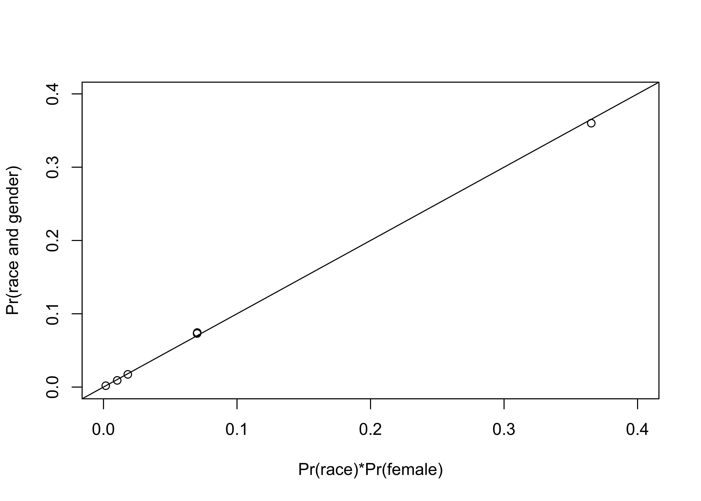]
Conditional Independence
We can extend the concept of independence to situations with more than two events:
If events \(A\), \(B\), and \(C\) are jointly independent then:
\[Pr(A \cap B \cap C) = Pr(A)Pr(B)Pr(C)\]
Joint independence implies pairwise independence and conditional independence:
\[Pr(A \cap B | C) = Pr(A|C)Pr(B|C)\] But not the reverse.
Bayes Rule
Bayes rule is theorem for how we should update our beliefs about \(A\) given that \(B\) occurred:
\[Pr(A|B) = \frac{Pr(B|A)Pr(A)}{Pr(B)} = \frac{Pr(B|A)Pr(A)}{Pr(B|A)Pr(A)+Pr(B|A^\complement)Pr(A^\complement)}\] Where
\(Pr(A)\) is called the prior probability of A (our initial belief)
\(Pr(A|B)\) is called the posterior probability of A given B (our updated belief after observing B)
What’s the probability you have Covid-19 given a positive test
\[Pr(Covid|Test +) = \frac{Pr(+|Covid)Pr(Covid)}{Pr(Test +)}\]
||-|| | Test Positive | True Positive | False Positive | | Test Negative | False Negative | True Negative |
What’s the probability you have Covid-19 given a positive test
Let’s assume:
1 out 100 people have Covid-19
Our test correctly identifies true positives 95 percent of the time (sensitivity = True Positive Rate)
Our test correctly identifies true negatives 95 percent of the time (specifity = True Negative Rate)
What’s the probability you have Covid-19 given a positive test
In a sample of 100,000 people then:
\[Pr(Covid|Test +) = \frac{Pr(+|Covid)Pr(Covid)}{Pr(Test +)}\]
||-|| | Test Positive | 950 | 4950 | | Test Negative | 50 | 94050 |
- \(Pr(+|Covid) = 950/(1000) \approx 0.95\)
- \(Pr(Covid) = 1000/100000 \approx 0.01\)
- \(Pr(+) = Pr(+|Covid) + Pr(+|Covid)= .95*.01 + .05*.99 \approx 0.059\)
What’s the probability you have Covid-19 given a positive test
Converting this table into marginal probabilities
\[Pr(Covid|Test +) = \frac{Pr(+|Covid)Pr(Covid)}{Pr(Test +)}\]
||-||| | Test Positive | 0.0095 | 0.0495 |0.059 | Test Negative | 0.0005 | 0.9505 | 0.941 | Prob(Covid) | 0.01 | 0.99 | 1
\[Pr(Covid|Test +) = \frac{Pr(+|Covid)Pr(Covid)}{Pr(Test +)}\] \[Pr(Covid|Test +) = \frac{0.95 \times 0.01}{0.059} \approx 0.16\] ## What if we took a second test?
We could use posterior belief as our prior:
\[Pr(Covid|2nd +) = \frac{0.95 \times 0.16}{0.16\times0.95 + (1-0.16)\times 0.95 } \approx 0.783\] Now we’re much more confident that we have Covid-19
💡
Random Variables and Probability Distributions
Random Variables
Random variables assign numeric values to each event in an experiment.
- Mutually exclusive and exhaustive, together cover the entire sample space.
Discrete random variables take on finite, or countably infinite distinct values.
Continuous variables can take on an uncountably infinite number of values.
Example: Toss Two Coins
- \(S={TT,TH,HT,HH}\)
- Let \(X\) be the number of heads
- \(X(TT)=0\)
- \(X(TH)=1\)
- \(X(HT)=1\)
- \(X(HH)=2\)
Probability Distributions
Broadly probability distributions provide mathematical descriptions of random variables in terms of the probabilities of events.
The can be represented in terms of:
- Probability Mass/Density Functions
- Discrete variables have probability mass functions (PMF)
- Continuous variables have probability density functions (PDF)
- Cumulative Density Functions
- Discrete: Summation of discrete probabilities
- Continuous: Integration over a range of values
Discrete distributions
Probability Mass Function (pmf): \(f(x)=p(X=x)\)
Assigns probabilities to each unique event such that Kolmogorov Axioms (Positivity, Certainty, and Additivity) still apply
Cumulative Distribution Function (cdf) \(F(x_j)=p(X\leq x)=\sum_{i=1}^{j}p(x_i)\)
- Sum of the probability mass for events less than or equal to \(x_j\)
Example: Toss Two coins
- \(S={TT,TH,HT,HH}\)
- Let \(X\) be the number of heads
- \(X(TT)=0\)
- \(X(TH)=1\)
- \(X(HT)=1\)
- \(X(HH)=2\)
- \(f(X=0)=p(X=0)=1/4\)
- \(f(X=1)=p(X=1)=1/2\)
- \(F(X\leq 1) = p(X \leq 1)= 3/4\)

Each side has equal probability of occurring (1/6). The probability that you roll a 2 or less P(X<=2) = 1/6 + 1/6 = 1/3
Continuous distributions
- Probability Density Functions (PDF): \(f(x)\)
- Assigns probabilities to events in the sample space such that Kolmogorov Axioms still apply
- But… since their are an infinite number of values a continuous variable could take, p(X=x)=0, that is, the probability that X takes any one specific value is 0.
- Cumulative Distribution Function (CDF) \(F(x)=p(X\leq x)=\int_{-\infty}^{x}f(x)dx\)
- Instead of summing up to a specific value (discrete) we integrate over all possible values up to \(x\)
- Probability of having a value less than x
Integrals
First, a brief aside on integral calculus:
What’s the area of the rectangle? \(base\times height\)
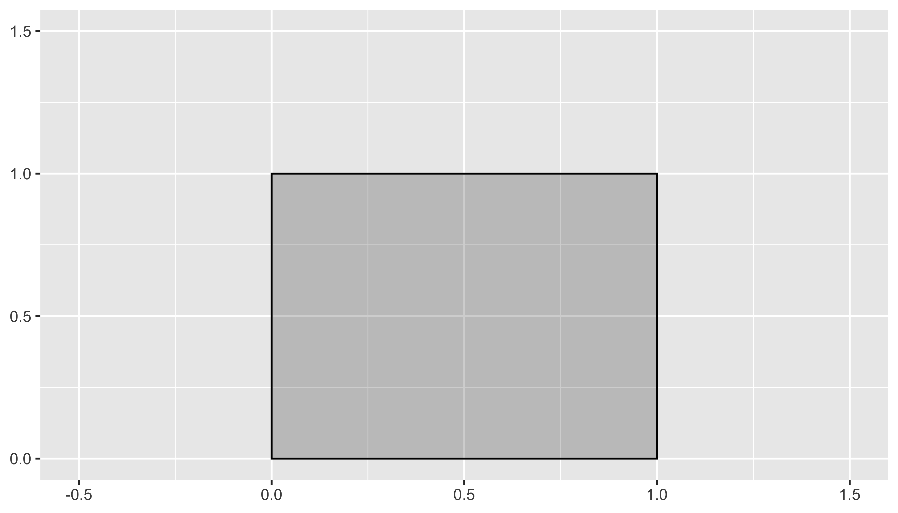Integrals
How would we find the area under a curve?
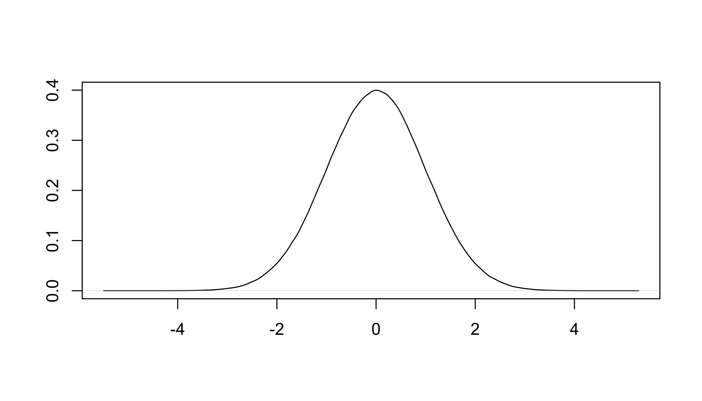Integrals
Well suppose we added up the areas of a bunch of rectangles roughly whose height’s approximated the height of the curve?
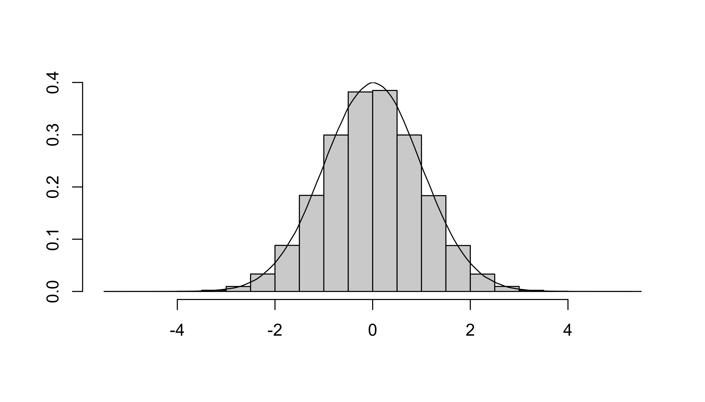Can we do any better?
Integrals
Let’s make the rectangles smaller
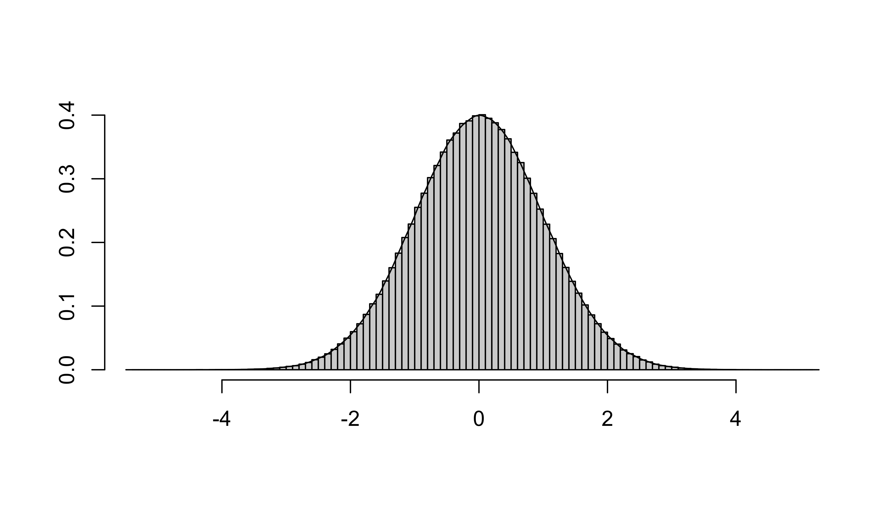What happens as the width of rectangles get even smaller, approaches 0? Our approximation get’s even better:
Link between PDF and CDF
If \[F(x)=p(X\leq x)=\int_{-\infty}^{x}f(x)dx \]
Then by the fundamental theorem of calculus
\[\frac{d}{dx}F(x)=f(x)\]
In words
the PDF \((f(x))\)is the derivative (rate of change) of the CDF \((F(X))\)
the CDF describes the area under the curve defined by f(x) up to x
Properties of the CDF
\(0\leq F(x) \leq 1\)
\(F\) is non-decreasing and right continuous
\(\lim_{x\to-\infty}F(x)=0\)
\(\lim_{x\to\infty}F(x)=1\)
For all \(a,b \in \mathbb{R}\) s.t. \(a<b\)
\[p(a < X \leq b) = F(b)- F(a) = \int_a^b f(x)dx \]
Recall the PMF and CDF of a die
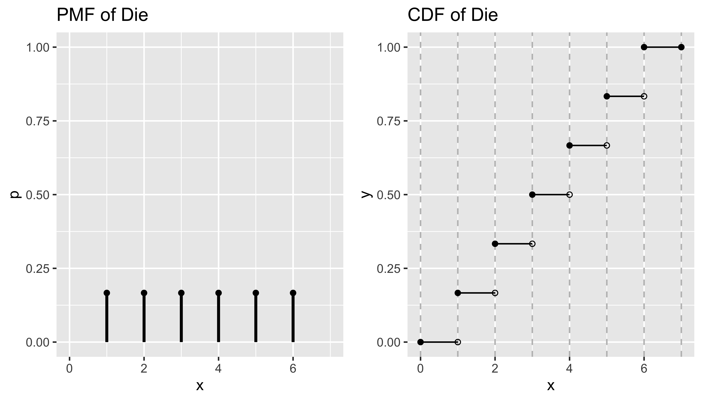What’s the probability
\(p(X=1)...p(X=6) = 1/6\)
\(p( 2 < X \leq 5) = F(5)-F(2)=5/6-2/6=3/6=1/2\)
Common Probablity Distirbutions
In this course, we’ll use probability distributions to
Model the data generating process as a function of parameters we can estimate
To perform inference based on asymptotic theory (statements about how statistics would be have as our sample size approached infinity)
There are a lot of probability distributions:

Fortunately, the distributions you need to know to really master data science, is probably more something like


And the distributions we’ll work with the most in this class are an even smaller subset.
Bernoulli Random Variables
Let’s start with our old friend the coin flip
A coin flip is an example of a Bernoulli random variable defined by 1 parameter \(p\), the probability of success. It has a pmf of
\[f(x) = \left\{ \begin{array}{cc} p & \mathrm{if\ } x=1 \\ 1-p & \mathrm{if\ } x=0 \\ \end{array} \right.\]
And a CDF of
\[F(x) = \left\{ \begin{array}{cc} 0 & \mathrm{if\ } x<1 \\ 1-p & \mathrm{if\ } 0\leq x<1 \\ 1& \mathrm{if\ } x\geq1 \\ \end{array} \right.\]
Note that in our coin flip example \(p=0.5\) but it need not. Just imagine a weighted coin like the Patriots use at Foxborough
Uniform Distribution
Our fair die examples represent a discrete uniform distribution: multiple outcomes, equally likely. We could even imagine an infinite number of possible outcomes within a range \([a,b]\), the key parameters for a uniform distribution, in which case our case our continuous uniform random variable has a pdf of
\[f(x) = \left\{ \begin{array}{cc} \frac{1}{b-a}& \mathrm{if\ } a \leq x\leq b \\ 0 & \text{otherwise} \\ \end{array} \right.\]
And a CDF:
\[F(x) = \left\{ \begin{array}{cc} 0 & x <a \\ \frac{x-a}{b-a}& \mathrm{if\ } a \leq x < b \\ 1 & x \geq b \\ \end{array} \right.\]
We won’t run into uniform distributions all that often except in examples like rolling a fair sided die, but often they’re used in Bayesian analysis as a form of uninformative prior.
Binomial Distributions
The binomial distribution may be thought of as the sum of outcomes of things that follow a Bernoulli distribution. Toss a fair coin 20 times; how many times does it come up heads? This count is an outcome that follows the binomial distribution.
The key parameters are the number of trials \(n\) and the probability of success for each trial \(p\) and the pdf of a binomial distribution is:
\[f(x)=\binom{n}{x}p^x (1-p) ^{1-x} \ \text{for x 0,1,2},\dots n\] So if we were to toss a fair coin 20 times and count up the number of heads, the most common outcome would be 10 heads
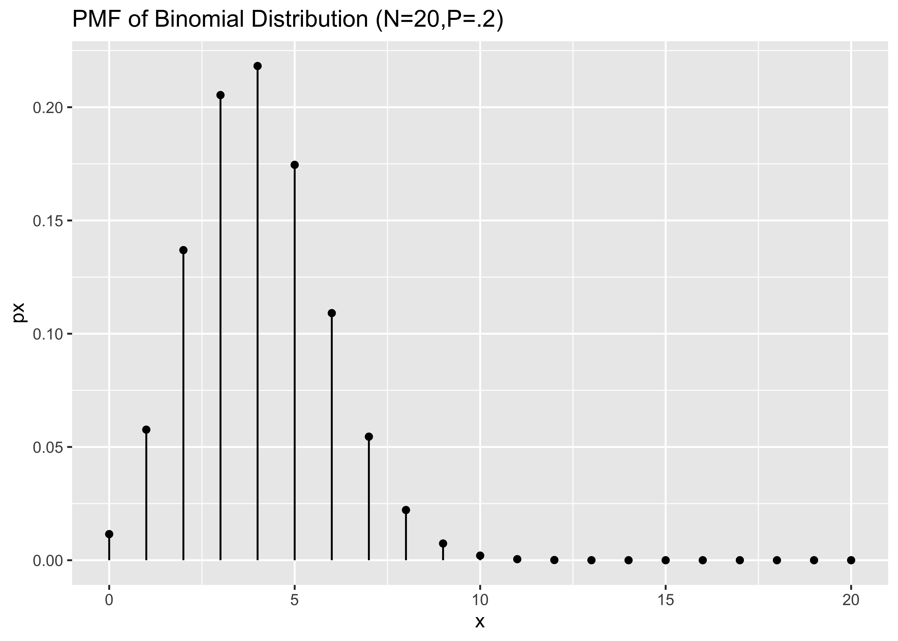The binomial distribution will come in handy when trying to model binary outcomes.
Poisson Distributions
What would happen if you let the \(n\) in a binomial distribution go to infinity and \(p\) go to 0 so that \(np\) stayed the same. A Poisson distribution is what would happen. We use Poisson and negative binomial distributions to describe counts using the parameter \(\lambda\) which represents rate at which events occur.
\[f(x)=\frac{\lambda^x}{x!}e^{-\lambda}\]
We use these distributions to try and predict to predict the probability of a given number of events occurring in a fixed interval of time. Things like how many acts of political participation would a voter engage in over a year.
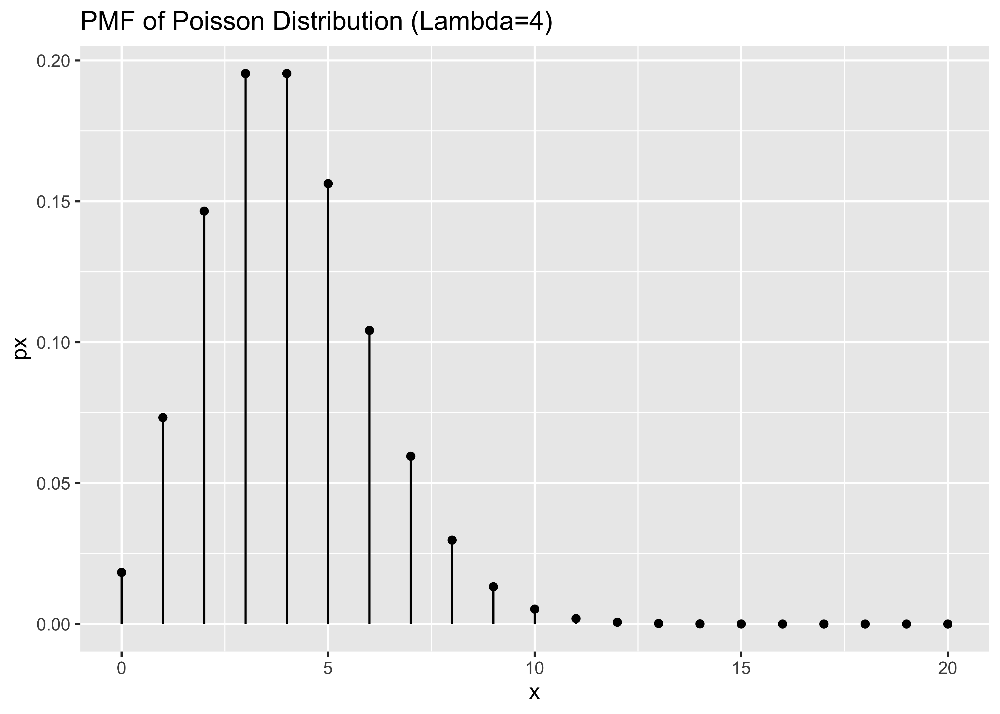
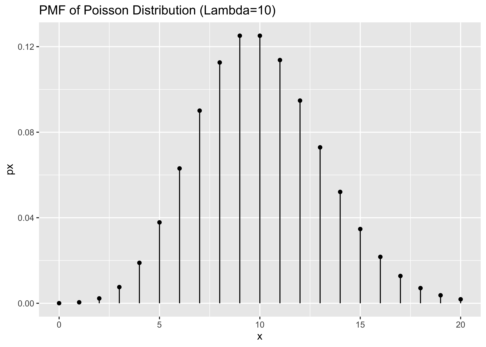
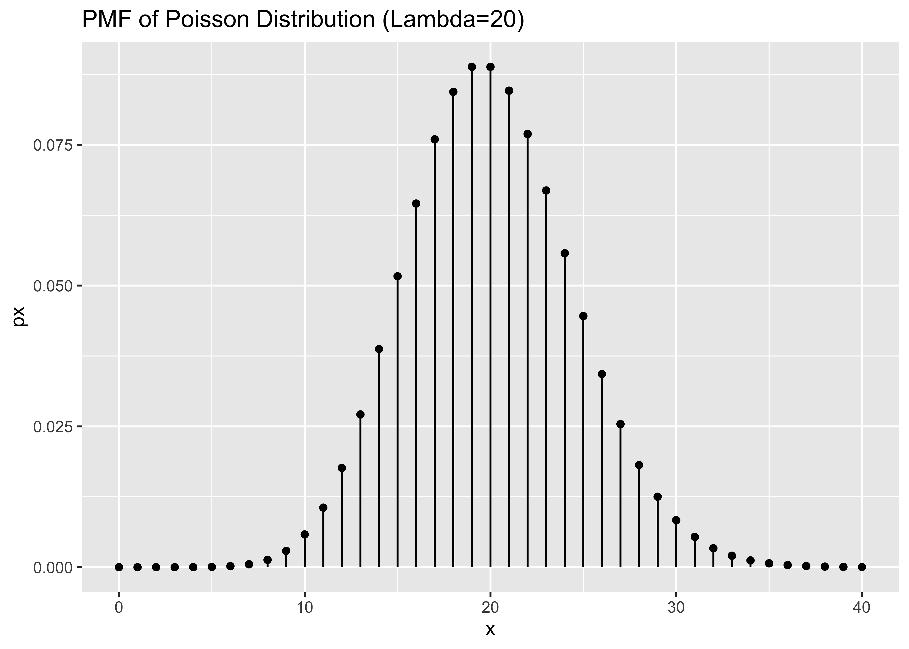
Geometric Distributions
What if we wanted to know the number times a coin came up tails before heads occurred? This discrete random variable follows a geometric distribution:
\[f(x)=p(1-p) ^{x}\]
Geometric and related distributions are useful for describing the time until an event occurs
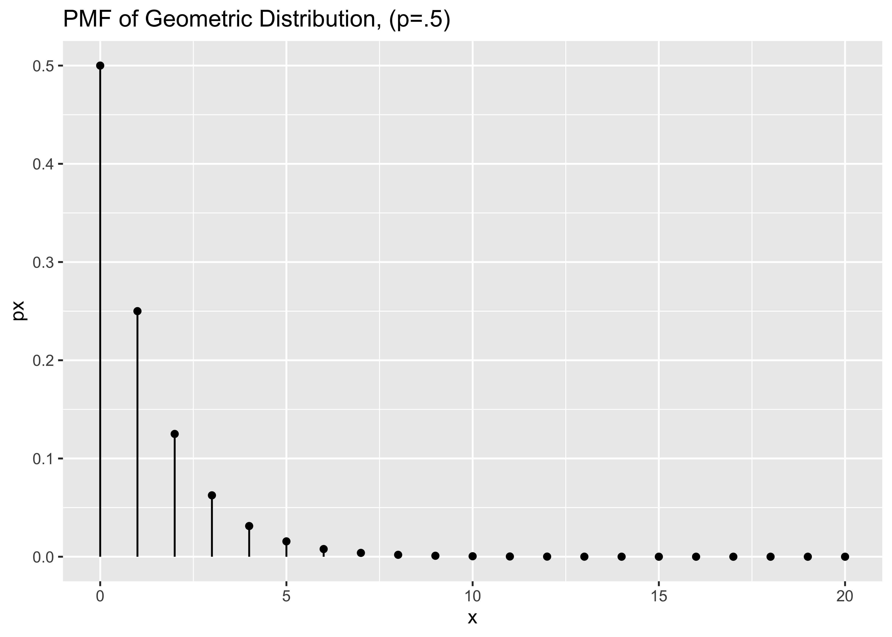Exponential Distributions
Taking a geometric distribution to its limit, you arrive at the continuous exponential distribution, again described by a \(\lambda = \frac{1}{\beta}\) rate parameter
\[f(x)=\frac{1}{\beta}\exp\left[-x/\beta\right]\]
Cioffa-Revilla (1984) uses an exponential distribution to model the stability of Italian governments.
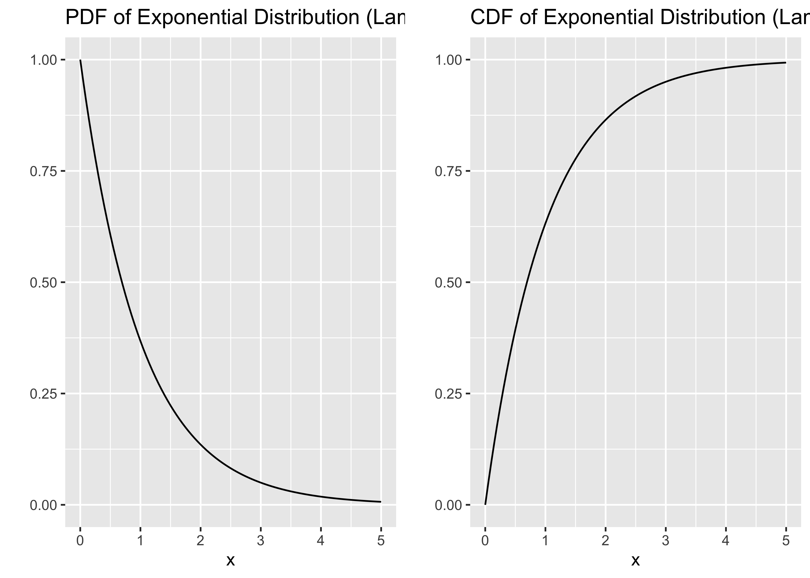Normal Distribution
Finally, there’s the distribution so ubiquitous we called it normal. The Normal distribution is defined by two parameters: a location parameter \(\mu\) that determines the center of a distribution and a scale parameter \(\sigma^2\) that determines the spread of a distribution
\[f(x)=\frac{1}{\sqrt{2\pi\sigma^2}}\exp \left[ -\frac{1}{2\sigma^2}(x-\mu)^2 \right]\]
Standard normal: \(X \sim N(\mu =0,\sigma^2=1)\)
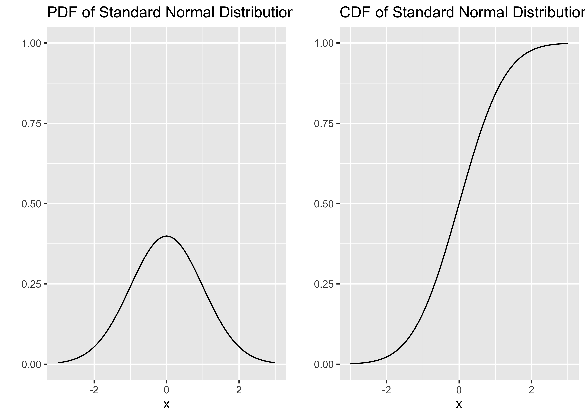
As we’ll see normal distributions tend to arise when ever you’re summing variables.
That is sum together a bunch of values from almost any distribution and the distribution of their sums tends to follow a normal distribution.
Since lots of our statistics involve summation, lots of our statistics will tend to follow normal distributions in their limit (in finite samples like the world we live in they may follow related distributions like the t-distribution, but more on that later.)
Consider a binomial distribution with N=100 and p=.5.
The pmf of this variable (black lollipops) follows a distribution that’s closely approximated by a normal distribution (red line) with a mean 50 and a standard deviation of 5.
A relationship explained more generally by the Central Limit Theorem, which we’ll cover next week.
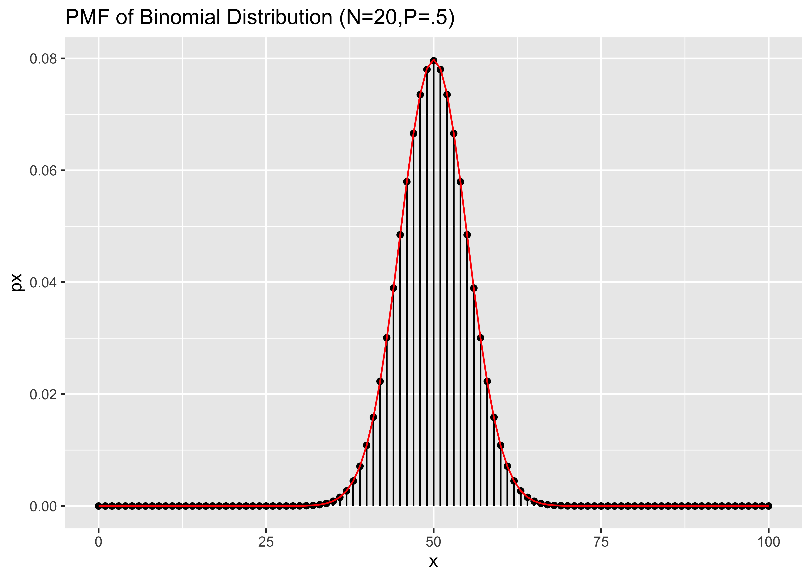
What’s the \(p(X \leq 0)\) for a normal distirbution with mean 0 and sd 1
Since the normal distribution is so common, it’s useful to get practice working with it’s pdf and cdf.
Consider the following question: If X is normally distributed variable with \(\mu=0\) and \(\sigma=1\), what’s the probability that X is less than 0 \(p(X\leq0)=?\) We could solve:
\[\int_{-\infty}^{0}\frac{1}{\sqrt{2\pi}\sigma}e^{-\frac{1}{2}\left(\frac{x-\mu}{\sigma}\right)^2}dx=0.5\]
But R’s pnorm() function will quickly tell us
- \(p(X\leq0)=\) 0.5
And we can visualize this as follows:
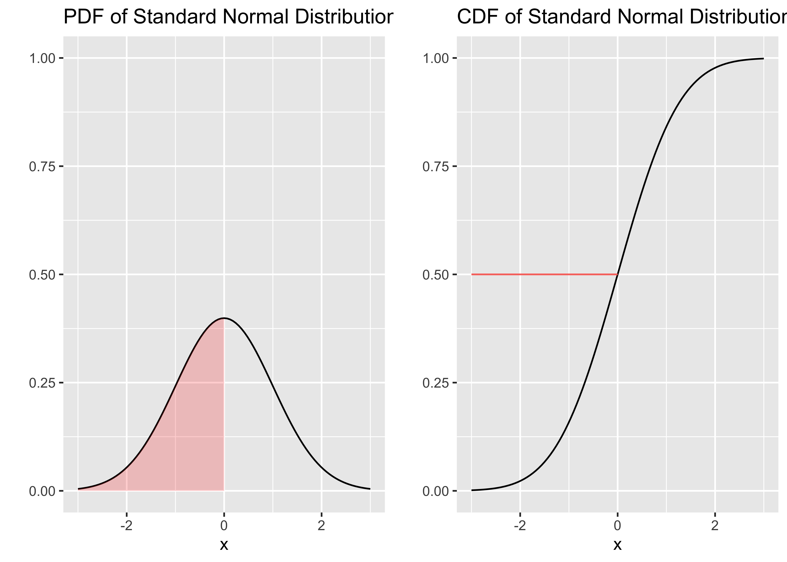
Consider some other questions?
- \(p(X=0)=0\)
- The probability that a continuous variable is exactly some value is always 0.
- \(p(X<0)=0.5\)
- \(p(-1< X< 1)\)
- \(p(-2< X< 2)\)
p(-1 < X < 1)
- \(p(-1< X< 1)=pr(X<1)-pr(X<-1)\)
\[\int_{-1}^{1}\frac{1}{\sqrt{2\pi}\sigma}e^{-\frac{1}{2}\left(\frac{x-\mu}{\sigma}\right)^2}dx=0.841-0.158=0.682\]
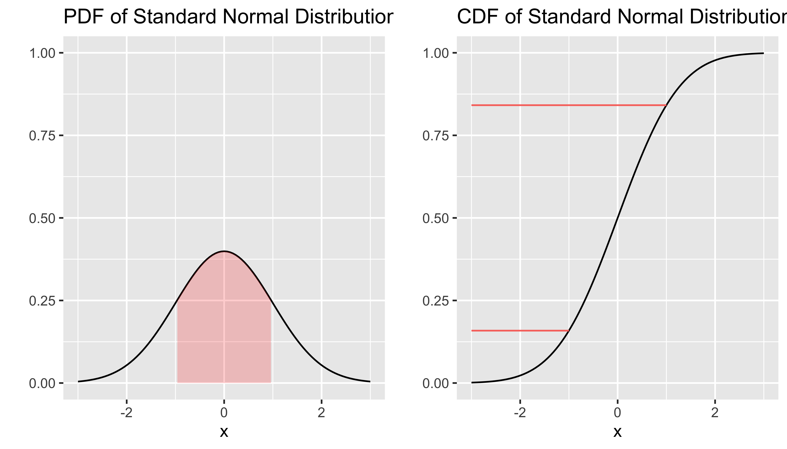
p(-2 < X < 2)
- \(p(-2< X\leq 2)=\) 0.9544997
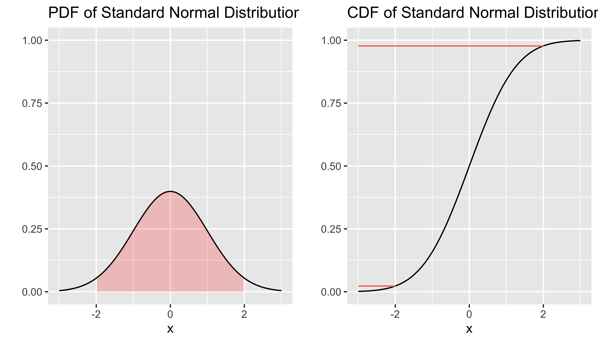
We’ll use the fact that close 95 of the observations of a standard normal variable will be within 2 standard deviations of the the mean of 0 for assessing whether a given statistic is likely to have arisen if the true value of that statistic were 0.
Expected Value
A (probability) weighted average of the possible outcomes of a random variable, often labeled \(\mu\)
Discrete:
\[\mu_X=E(X)=\sum xp(x)\]
Continuous
\[\mu_X=E(X)=\int_{-\infty}^{\infty}xf(x) dx\]
What’s the expected value of a 1 roll of fair die?
\[\begin{align*} E(X)&=\sum_{i=1}^{6}x_ip(x_i)\\ &=1/6\times(1+2+3+4+5+6)\\ &= 21/6\\ &=3.5 \end{align*}\]
Properties of Expected Values
\(E(c)=c\)
\(E(a+bX)=a+bE[X]\)
\(E[E[X]]=X\)
\(E[E[Y|X]]=E[Y]\)
\(E[g(X)]=\int_{-\infty}^\infty g(x)f(x)dx\)
\(E[g(X_1)+\dots+g(X_n)]=E[g(X_1)]+\dots E[g(X_n)\)
\(E[XY]=E[X]E[Y]\) if \(X\) and \(Y\) are independent
How many times would you have to roll a fair die to get all six sides?
We can think of this as the sum of the expected values for a series of geometric distributions with varying probabilities of success. The expected value of a geometric variable is:
\[\begin{align*}E(X)&=\sum_{k=1}^{\infty}kp(1-p)^{k-1} \\ &=p\sum_{k=1}^{\infty}k(1-p)^{k-1} \\ &=p\left(-\frac{d}{dp}\sum_{k=1}^{\infty}(1-p)^k\right) \text{(Chain rule)} \\ &=p\left(-\frac{d}{dp}\frac{1-p}{p}\right) \text{(Geometric Series)} \\ &=p\left(\frac{d}{dp}\left(1-\frac{1}{p}\right)\right)=p\left(\frac{1}{p^2}\right)=\frac1p\end{align*}\]
For this question, we need to calculate the probability of success, p, after getting a side we need.
The probability of getting a side you need on your first role is 1. The probability of getting a side you need on the second role, is 5/6 and so the expected number of roles is 6/5, and so the expected number of rolls to get all six is:
Variance
If \(X\) has a finite mean \(E[X]=\mu\), the \(E[(X-\mu)^2]\) is finite and called the variance of \(X\) which we write as \(\sigma^2\) or \(Var[X]\).
Note:
\[\begin{align*} \sigma^2=E[(X-\mu)^2]&=E[(X^2-2\mu X+\mu^2)]\\ &= E[X^2]-2\mu E[X]+\mu^2\\ &= E[X^2]-2\mu^2+\mu^2\\ &= E[X^2]-\mu^2\\ &= E[X^2]-E[X]^2 \end{align*}\]
- “The variance of X is equal to the expected value of X-squared, minus the square of X’s expected value.”
- \(\sigma^2=E[X^2]-E[X]^2\) is a useful identity in proofs and derivations
Variance and Standard Deviations
We often think of variances \(Var[X]\) as describing the spread of a distribution
\[\sigma^2=Var[X]=E[(X-E[X])^2]=E(X^2)-E(X)^2\]
A standard deviation is just the square root of the variance
\[\sigma=\sqrt{Var[X]}\]
Covariance
Covariance measures the degree to which two random variables vary together.
- \(Cov[X,Y] \to +\) An increase in \(X\) tends to be larger than its mean when \(Y\) is larger than its mean
\[Cov[X,Y]=E[(X-E[X])(Y-E[Y])]=E[XY]-E[X]E[Y]\]
Properties of Variance and Covariance
\(Cov[X,Y]=E[XY]-E[X]E[Y]\)
\(Var[X]=E[X^2]-(E[X])^2\)
\(Var[X|Y]=E[X^2|Y]-(E[X|Y])^2\)
\(Cov[X,Y]=Cov[X,E[Y|X]]\)
\(Var[X+Y]=Var[X]+Var[Y]+2Cov[X,Y]\)
\(Var[Y]=Var[E[Y|X]]+E[Var[Y|X]]\)
WYNK: Honestly, for this class, you won’t need to know these properties. They’ll show up in proofs and theorems and become important when you’re trying to evaluate properties of an estimator (isn’t unbiased, is it “efficient”, or consistent does it have minimum variance?) but that’s for another day/course.
Correlation
- The correlation between \(X\) and \(Y\) is simply the covariance of \(X\) and \(Y\) divided by the standard deviation of each.
\[\rho=\frac{Cov[X,Y]}{\sigma_X\sigma_Y}\]
- Normalize covariance to a scale that runs between [-1,1]
Question: If two variables have zero covariance, are they independent?
No
A trivial example
- \(p(X=x)=1/3\) for \(x = -1,0,1\) and let \(Y=X^2\)
- Y clearly depends on X even though their covariance is 0
Summary: Random Variables and Probability Distributions
Random variables assign numeric values to each event in an experiment.
Probability distributions assign probabilities to the values that a Random variable can take.
- Discrete distributions are despribed by their pmf and cdf
- Continuous distributions by their pdf and cdf
Probability distributions let us describe the data generating process and encode information about the world into our models
- There are lots of distributions
- Don’t worry about memorizing formulas
- Do develop intuitions about the nature of your data generating process (Is my outcome continuous or disrecte, binary or count, etc.)
Two key features of probability distributions are their:
- Expected values
- Variances
POLS 1600